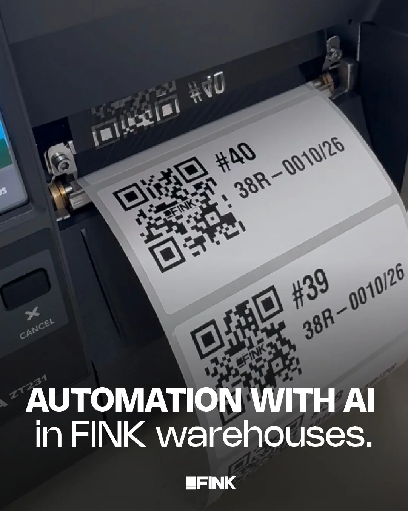
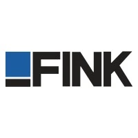

01 / PRODUTO
PO virtual
Conhece requisitos, decisões, histórico e o estado atual do produto. Responde perguntas, esclarece pedidos e propõe o trabalho que deve entrar no board.
A CastelloSoft implanta uma operação de desenvolvimento para criar e evoluir seus sistemas. Um PO virtual conhece o produto. Um Tech Lead virtual coordena os tickets. Agentes executam, testam e revisam.
A CastelloSoft conecta conhecimento de produto, decisões e desenvolvimento em um fluxo contínuo. Sua equipe acompanha o que importa e decide os próximos passos.
Conhece requisitos, decisões, histórico e o estado atual do produto. Responde perguntas, esclarece pedidos e propõe o trabalho que deve entrar no board.
Coordena o desenvolvimento dos tickets, acompanha a execução, diagnostica bloqueios e encaminha decisões técnicas com contexto.
A aprovação das prioridades e a publicação continuam com sua equipe.

PUBLICAÇÃO DA FINK
A CastelloSoft mantém um dos sistemas da Fink. Essa experiência em uma operação logística real orienta nossa forma de implantar e acompanhar fábricas de software.
Conheça a FinkMonitoramento, suporte e manutenção corretiva da fábrica em regime 24x7x365.
Setup, integração, treinamento e projetos para colocar a fábrica para trabalhar no seu ambiente.
Ritmo de referência: 1 ticket a cada 2 horas. Média para tarefas de tamanho INVEST em um fluxo com desenvolvimento, staging e produção. Varia conforme escopo, verificações e aprovações.
Mostramos como a fábrica pode operar no contexto da sua empresa.